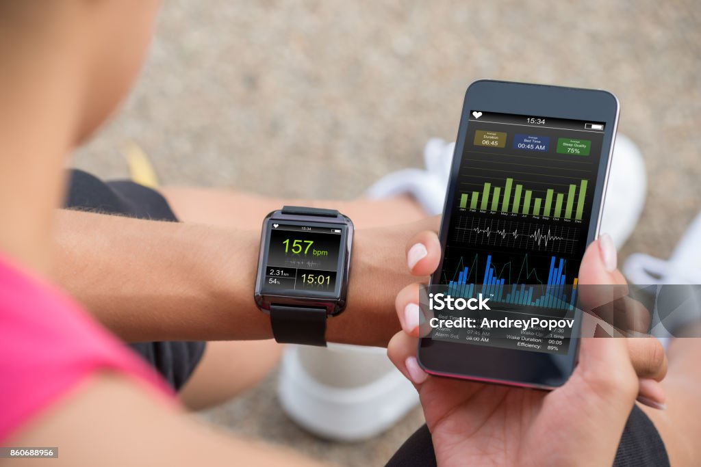

Blog page
About our store
Technology
Technology refers to tools, systems, and innovations developed by humans to solve problems, increase efficiency, and improve everyday life. It includes areas such as computers, smartphones, AI, and medicine. As a human tool, the watch began as a mechanical device for telling time and evolved into the digital watch and smartwatch. Today, they are both fashionable and functional, providing health tracking, communication, Internet access, and other functions, integrating technology into everyday life.
Positive impact of Technology
Watch is a craft which symbolizes royalty, luxury, and the passage
of the moments. It has evolved with the time but not the essence
it still represents traditions, prestige among the people.
Technology has had a great impact on today's world, some of its
positive effects are listed below:
- Watch helps people in time management and keeps people punctual to their routines
- Watch represents tradition and prestige among the people
- With advancements in watch technology, smartwatches can monitor our health problems like blood pressure, heart rate just by wearing them on the wrist which promotes a better lifestyle
- Smartwatches help in fitness tracking, GPS (Global Positioning System) which helps us to know about unknown places
- Also, smartwatches provide you the ability to call, message and get notifications which can be more portable than mobile phones and laptops
- Watches can be customized according to the user's needs like color, brand, and setting
- Watch symbolizes royalty and luxury
Negative impact of Technology
Watch market has grown and online platforms have helped its market
grow making luxury watches accessible worldwide anytime you want.
Technology has grown watch but also degraded in some factors it
has caused old models, traditional crafts to diminish the
appreciation towards them, and small brands have a lot of
difficulties competing with the bigger companies.
So we can say that although technology has made a big impact on
today's world there are still some negative impacts of technology
which are as follows:
- Technology has grown watches but also degraded some factors causing old models, traditional crafts to lose appreciation
- Smaller brands have a lot of difficulties competing with bigger brands
- People switching to smartwatches has caused a loss of emotional and cultural values that ancient watches hold
- Smartwatches distract people resulting in reduced focus on the present moment
- Continuous use of smartwatches under low light can cause problems to our eyes
- Overdependence on devices impacts social interaction negatively
- Smartwatches can lead to over-reliance on technology for small tasks resulting in laziness
Conclusion
In conclusion, from traditional means to integrating the latest technology, the watch industry has greatly changed in its process of serving the preferences of consumers. The advent of smartwatches and advanced manufacturing methods expanded functionality and access, yet at the same time created a discussion of sustainability, cultural values, and even the possibility of counterfeiting. Embracing innovation yet preserving craftsmanship, offering personalization, and authenticity—the industry balances between heritage and progress in meaningful ways with customers across the globe.